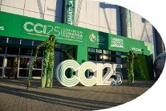

What the Summit Was
The International Climate Summit: Latin American Commitment toward COP30 gathered regional and international leaders in Córdoba to articulate a Latin American contribution to the global climate agenda ahead of COP30.
Purpose & Positioning
The summit positioned Córdoba as a regional climate reference point and created a platform for public officials, international experts, legislators, companies and civil society leaders to discuss practical climate commitments, energy transition and sustainable development.
Program Architecture
The program combined plenary sessions, high-level panels, policy conversations and institutional exchanges across multiple spaces, connecting climate ambition with local implementation and regional cooperation.
Outcomes & Legacy
The event strengthened Córdoba’s international positioning and provided a visible platform for Latin American climate leadership, with broad participation from countries, media and international speakers.
Gallery
A curated selection of images from International Climate Summit: Latin American Commitment toward COP30.
